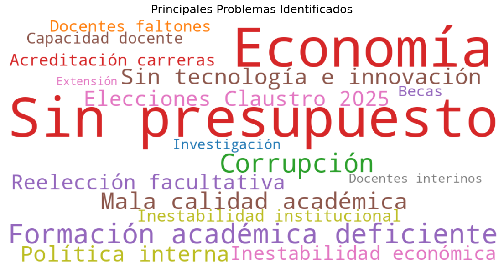
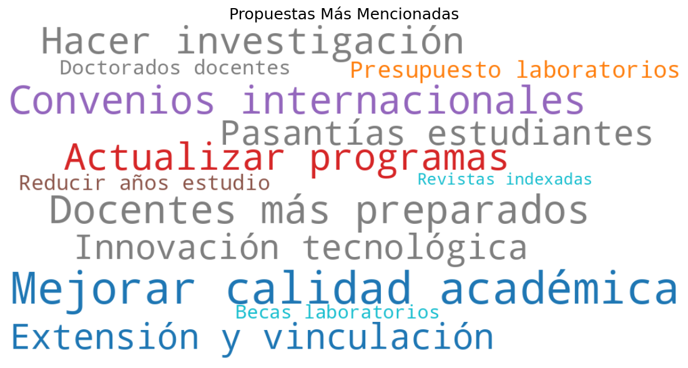

CIRCPyCS
Anterior Encuesta
Resultados Encuesta UAGRM 2025
Análisis de percepción sobre preferencias para Rector y Vicerrector UAGRM 2025
Ficha Técnica
Metodología:
Encuesta de percepción académica, institucional y política mediante formularios virtuales.
Características de la muestra:
Muestreo no probabilístico y proporcional al tamaño de la población.
Aplicación de la Encuesta:
Del 02 al 07 de marzo de 2025.
Universo poblacional:
Docentes y estudiantes inscritos en la UAGRM, pertenecientes a las 18 facultades.
Tamaño de la muestra:
820 personas encuestadas (286 docentes y 534 estudiantes).
Distribución de la muestra:
Sin diferenciación de género ni edad, incluyendo docentes regulares y estudiantes registrados.
Coeficiente de fiabilidad:
95%.
Error de muestreo:
±4.1%.
Institución ejecutora:
Centro de Investigación Regional en Ciencia Política y Ciencias Sociales.
Características Generales
Problemas y Propuestas
Evaluación Gestión
Percepción Candidatos
Intención de Voto
Resultados Detallados
Características Generales de los Encuestados
Edad de los participantes
Facultad a la que pertenecen los encuestados
Departamento de nacimiento
Problemas y Propuestas de mejora en la UAGRM
Principales problemas identificados

Propuestas más mencionadas

Evaluación de la Gestión Actual
Total
Docentes
Estudiantes
Calificación del Gobierno Universitario
Opinión Rector Vicente Cuéllar
Opinión Vicerrector Reinerio Vargas
Percepción sobre los Candidatos
Total
Docentes
Estudiantes
¿Quién cree que ganará la elección a Rector?
Candidato preferido a Vicerrector
Candidato a Rector que NUNCA votaría
Valoración de la candidatura de Reinerio Vargas
Aspectos valorados en la gestión de Vargas
¿Está de acuerdo con la reelección del Rector Cuéllar?
Intención de Voto
Total
Docentes
Estudiantes
Intención de voto actual para Rector
Preferencia de acompañante (Vicerrector) de Reinerio Vargas